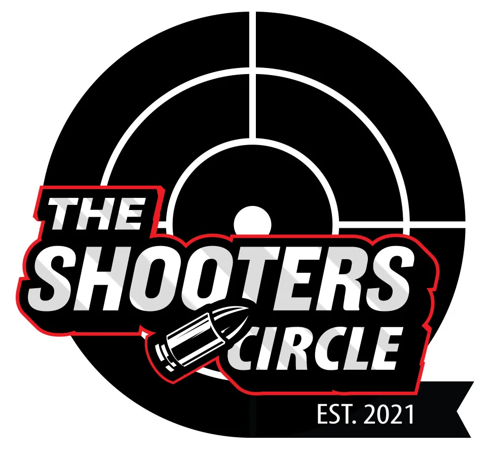
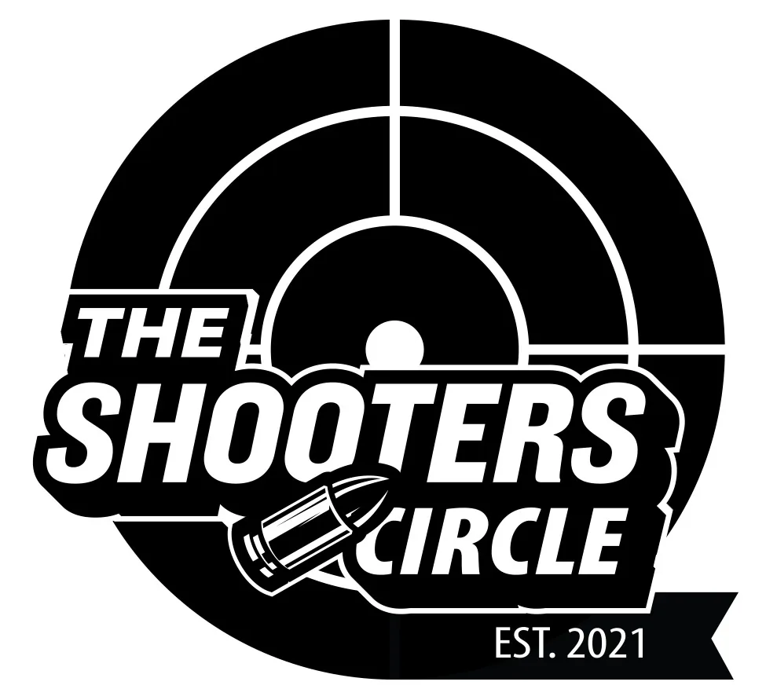
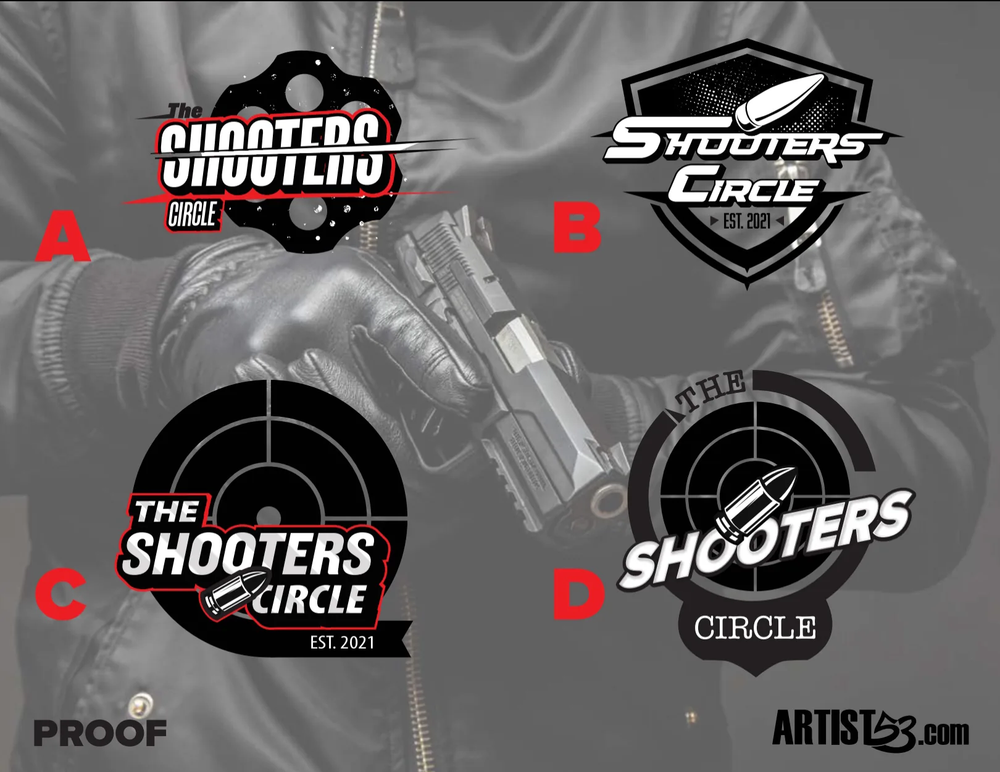
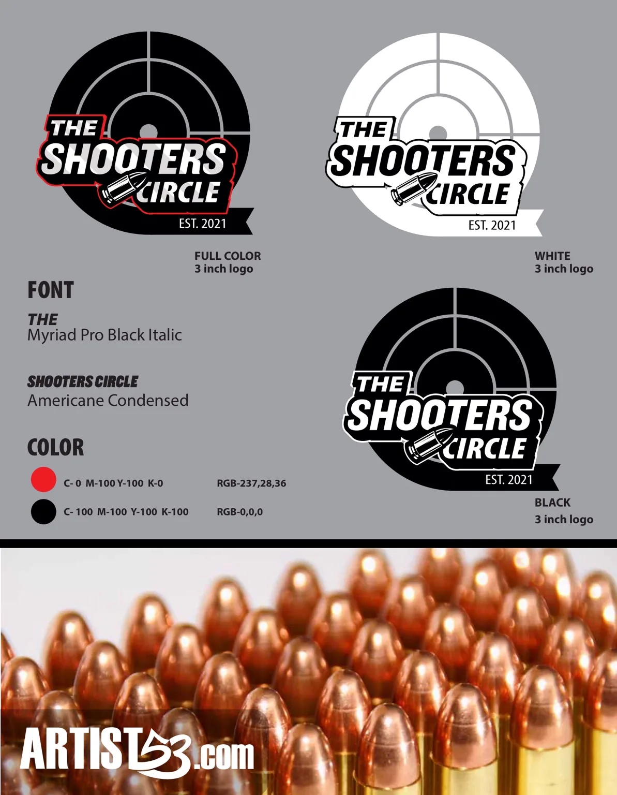
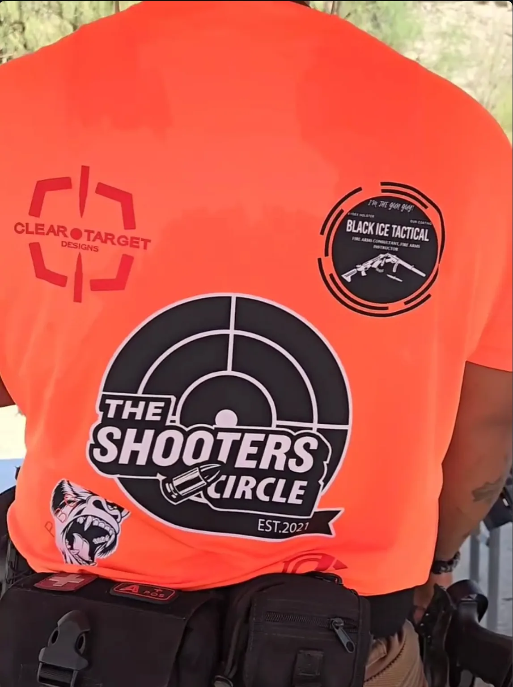
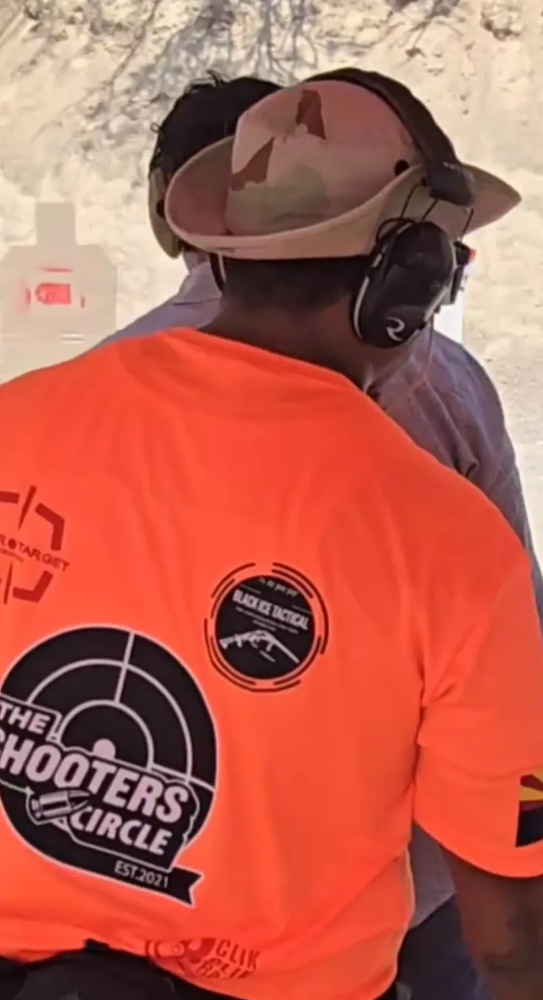

Logo Identity Case Study
The Shooters Circle
An iconic logo developed as part of the wider CLIK CLIK Bang brand ecosystem—built around a circular target symbol that can stay recognizable across apparel, events, social content and real world production.
View The ProjectBack To LogosProject Overview
A Brand Extension With Its Own Voice
The Shooters Circle expands the CLIK CLIK Bang visual world with a distinct identity centered on community, precision and shooting culture. The mark combines a circular target, condensed typography and cartridge imagery into a system that feels connected to the parent brand while still standing on its own.


Concept Development
Exploring The Strongest Direction
Multiple logo directions were tested before the final circular target concept was selected. The proof sheet shows the range of ideas considered—from faster, more aggressive marks to badge style and target driven solutions—before landing on the direction with the strongest balance of recognition, movement and production flexibility.

Early logo exploration and proofing before the final direction was selected.
Brand System
Typography, Color & Production Specs
The brand guide documents the final logo family, type choices, core red and black palette and reduced size logo treatments. This turns the mark into a repeatable identity system instead of a single standalone graphic.

Final identity guide showing full color, white and black logo versions, typography and color specifications.
CLIK CLIK Bang Connection
One Brand Ecosystem, Multiple Experiences
The Shooters Circle was not designed as an isolated logo. It functions as a related identity inside the CLIK CLIK Bang universe, allowing the larger brand to support specialized communities and event experiences without losing visual continuity.
This extension shows how a core brand can grow into a larger visual ecosystem: CLIK CLIK Bang establishes the parent identity while The Shooters Circle creates a focused identity for its own community, events and merchandise.
Real World Application
From Screen To Apparel
The identity moved beyond presentation artwork and into production. These event images show the logo applied at scale on high visibility apparel, where contrast, readability and silhouette all matter.


Design Result
Recognizable At A Distance
The final system gives The Shooters Circle a strong circular silhouette, clear typography and an unmistakable visual connection to shooting culture. More importantly, the identity holds together from early concept development through brand standards and real world apparel use.